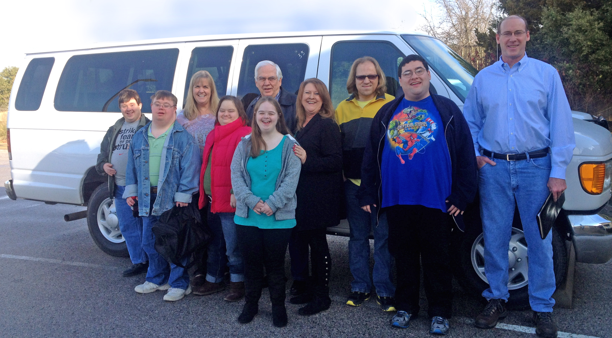

FFL RECENTLY RECEIVED A GENEROUS DONATION FROM ANOTHER AREA NON-PROFIT - THE FRANKLIN FAMILY RANCH. Larry and Charlotte Franklin have answered a prayer by donating a 15 passenger van to Friendships for Life. With this donation, we can now more than double the size of the program. THANK YOU!